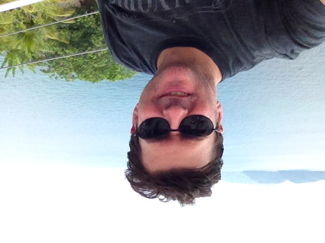

Abaixo uma foto minha da pasta, adicionada ao exercicio para teste!
Sou Engenheiro Civil , formado no Mackenzie e trabalhei vários anos nas principais Construtoras
do país. Há poucos anos comecei a empreender por conta própria, fiz um condomínio e construí
nele 16 casas. Agora quero me dedicar a família e a uma nova carreira.
Sou Brasileiro, casado, e moro em São Paulo/SP.
Algumas habilidades que possuo
Aqui um link para minha foto
Clique aqui para conhecer na aba ao lado, uma alternativa com suas vantagens e desvantagens para
FONTES RENOVÁVEIS DE ENERGIA!